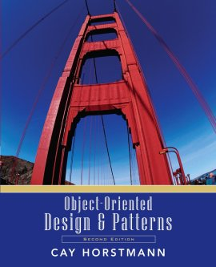

CS 151 - Lecture 1


design, password patterns


cayhorstmann
hw1, hw2, lab1, exam1, ..., as
directed.hw1, I mean the small letters h, w, and the digit 1
(Unicode U+0068, U+0077, U+0031). And not homework1, HW1,
Homework 1, etc.


Arrays.swapLargestAndSmallest(int[] a) that swaps the largest and smallest element in a. If
there are multiple largest or smallest elements, pick the first one.


cs151. Add me
(cayhorstmann) as a collaborator with Write access (in Settings → Access Management →
Users).git clone git@bitbucket.org:yourname/cs151.git cs151
where you replace yourname with your BitBucket user name.
cd cs151
lab1:
mkdir lab1
Arrays.java:
touch lab1/Arrays.java
git add lab1/Arrays.java
git commit -a -m "Added lab1"
git push origin master
Arrays.java

yourname with your BitBucket user name.
cd /tmp rm -rf cs151 git clone git@bitbucket.org:yourname/cs151.git cs151
cd /tmp/cs151/lab1 curl -O http://horstmann.com/sjsu/spring2019/cs151/day1/Tester.java javac Tester.java java Tester
git pull.
Try compiling and running again. lab1/report.txt in your student repo (not
the
grader repo). Put in your and your buddy's name.